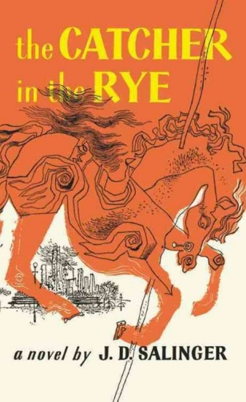
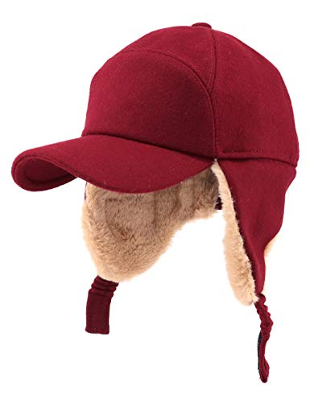
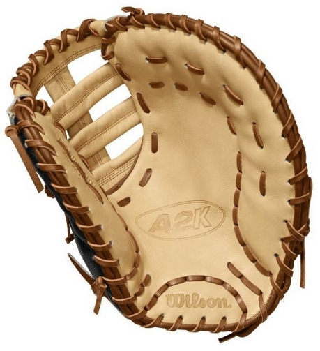

Holden Memorial Museum
Home
Works Cited
Virtual Museum
Welcome to our virtual musem!
Dedicated to Holden Caulfield

Explore an in-depth plot overview

Dig deep into Holden Caulfield's character
Understand the main motif of the novel

Learn about a central archetype
Discover key quotes that show who Holden is